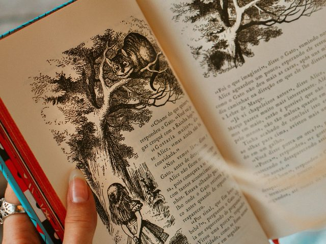

VOCABULARY · 主題 2000 字 PART 2 UNIT 31
Prepositions．介系詞
表示位置、方向和時間的介系詞，共 11 個。among 用在三者以上（between 是兩者之間）；in back of = behind。
共 11 個單字．點 🔊 聽發音
1againstprep.
靠著；反對；對抗
be against… 反對…
He leaned his bike against the wall.他把腳踏車靠在牆上。
2amongprep.
在…之中（三者以上）
兩者之間用 between
The little house is hidden among the trees.那間小屋藏在樹林之中。
3beyondprep.
在…的那一邊；超出
beyond the mountains 在山的另一邊
There is a small village beyond the river.河的那一邊有一個小村莊。
4in back ofprep.
在…後面
= behind
There is a garden in back of the house.房子後面有一個花園。
5in front ofprep.
在…前面
↔ in back of／behind
Please don't stand in front of the TV.請不要站在電視前面。

6out ofprep.
從…出來；離開
get out of bed 起床
The cat jumped out of the box.貓從箱子裡跳出來。
7next toprep.
在…旁邊；隔壁
= beside
Come and sit next to me.過來坐我旁邊。
8tillprep.
直到
= until
The store is open till ten p.m.這家店開到晚上十點。
9towardprep.
朝向；向…方向
= towards
The dog ran toward me.那隻狗朝我跑過來。

10uponprep.
在…上面
= on（比較正式）；Once upon a time 從前從前
Once upon a time, there lived a king.從前從前，有一位國王。
11upperadj.
上面的；上部的
↔ lower 下面的
My room is on the upper floor.我的房間在樓上。
FOCUS
位置
| 介系詞 | 意思 |
|---|---|
| in front of | 在前面 |
| in back of／behind | 在後面 |
| next to | 在旁邊 |
| among | 在（三者以上）之中 |
| between | 在（兩者）之間 |
in front of（在外面的前方）和 in the front of（在裡面的前段）不一樣。